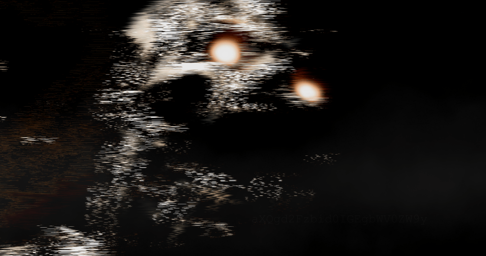
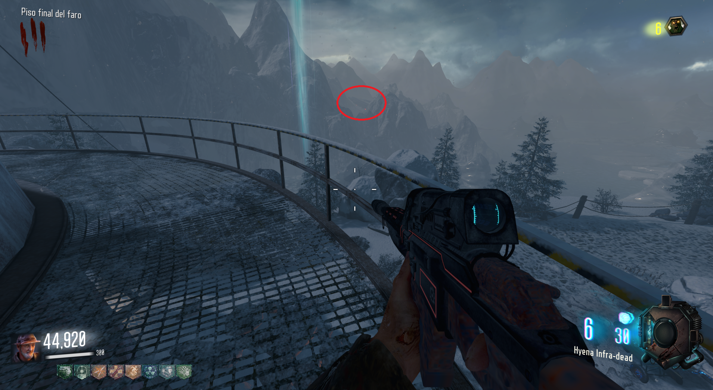
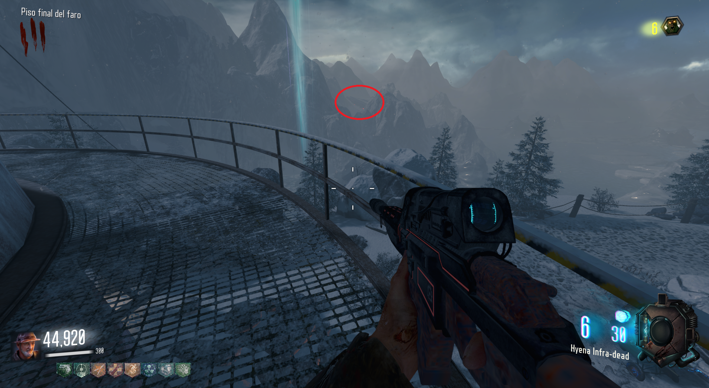

Scare Jump (Call of the Dead)

Para ver el la imagen del susto, deberemos subir a lo alto del faro y mirar a estas montañas.

Justo donde se ve un O.V.N.I apuntaremos con un sniper o la Scavenger y veremos el susto.

Para ver el la imagen del susto, deberemos subir a lo alto del faro y mirar a estas montañas.

Justo donde se ve un O.V.N.I apuntaremos con un sniper o la Scavenger y veremos el susto.